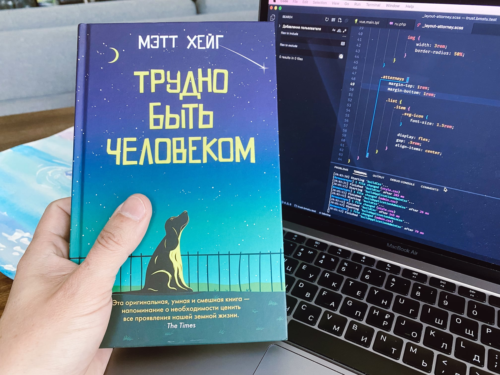

Оригинальное название книги английского писателя и журналиста Мэтта Хейга — «The Humans», переводчик же явно вдохновлялся Стругацкими.
Если о том, как трудно быть богом, мы можем только догадываться, то о проблемах человека рассказывать вроде никому не нужно, наша жизнь — одна сплошная проблема. Но главный герой повести буквально попал на Землю с другой планеты, и это позволяет посмотреть нам на себя со стороны.
Несмотря на «инопланетную» составляющую, книга не является фантастическим произведением. Это попытка разобраться, чем именно живут люди, какие чувства управляют ими и есть ли собственно на нашей планете Жизнь.
В книге полно иронии, философии и любви.
«Если собака кладет вам голову на колени, вы рано или поздно начинаете понимать, что ее необходимо погладить.»
«Я проснулся в ужасном состоянии. Глаза резало от усталости. Спина затекла. Колено побаливало, а в ушах ощущался легкий звон. Шумы, которым самое место в недрах планеты, исходили из моего желудка. В целом было ощущение, что я гнию заживо. Короче говоря, я чувствовал себя человеком. Сорокатрехлетним мужчиной.»
«67. Война — это ответ. На неверный вопрос. »